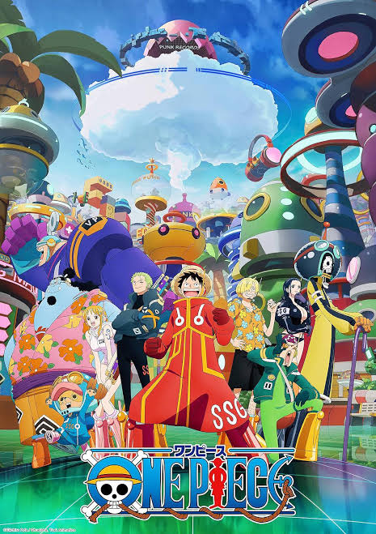
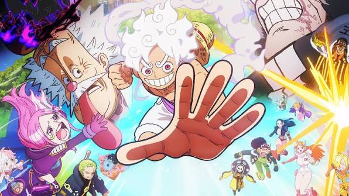

One Piece (ワンピース, Wan Pīsu) é uma série de mangá escrita e ilustrada por Eiichiro Oda. Os capítulos têm sido publicados na revista Weekly Shōnen Jump, tendo sua primeira publicação em 22 de julho de 1997, com os capítulos compilados e publicados em 111 volumes tankōbon pela editora Shueisha até março de 2025. One Piece segue as aventuras de Monkey D. Luffy, um jovem cujo corpo ganhou as propriedades de borracha após ter comido uma fruta do poder (Fruta do Diabo) ou (Akuma no Mi) acidentalmente. Com sua tripulação, os Piratas do Chapéu de Palha começam sua aventura no East Blue (um dos 4 grandes oceanos do mundo do One Piece) e almejam atravessar a Grand Line em busca do tesouro mais procurado do mundo, o "O Grande Tesouro Entrelaçador/ Símbolo Único" - "One Piece"/ "ひとつなぎの大秘宝" - "ワンピース" (Hitotsunagi no Daihihou - One Piece), a fim de se tornar o próximo Rei dos Piratas. One Piece atingiu a marca de mil capítulos publicados na Weekly Shonen Jump em janeiro de 2021, se tornando um dos raros mangás a ultrapassar tal marca, apesar de inicialmente ter sido rejeitado três vezes em 1996 para publicação seriada na revista pelo editor-chefe Kazuhiko Torishima, devido principalmente a problemas técnicos de quadrinização, que poderiam dificultar a compreensão de leitura dos mais novos.
O mangá foi adaptado em um episódio OVA produzido pela Production I.G em 1998, e num anime produzido pela Toei Animation, transmitido no Japão desde 1999. Além disso, a Toei Animation produziu catorze filmes de anime, um OVA e treze episódios especiais de televisão. Foram lançadas também vários tipos de mídias desenvolvidas por diversas empresas relacionadas à série, como um jogo de cartas colecionável, e vários jogos eletrônicos. A série de mangá é licenciada e publicada no Brasil pela editora Panini Comics. A série de anime já foi exibida no Brasil, e em Portugal. Atualmente a série é transmitida simultaneamente pela Crunchyroll no Brasil e transmitida pelo Netflix com uma nova dublagem em português brasileiro desde 2020.
One Piece recebeu elogios pelo seu enredo, humor e caracterização. Vários volumes do mangá quebraram recordes de publicação, incluindo a maior tiragem inicial de qualquer livro no Japão. O sítio oficial da série anunciou que o mangá estabeleceu um recorde mundial como "a série de quadrinhos de um mesmo autor com mais cópias publicadas no mundo". Em agosto de 2022, tinha mais de 516,6 milhões de cópias em circulação em 61 países e regiões em todo o mundo, tornando-se a série de mangá mais vendida da história e a série de quadrinhos mais vendida impressa em volume de livro. Foi a série de mangá mais vendida pelo décimo primeiro ano consecutivo em 2018. One Piece é uma das franquias de mídia com maior bilheteria de todos os tempos, estima-se que tenha gerado mais de 21 bilhões de dólares em receita total de franquia, a partir de mangás, animes e filmes, jogos e mercadorias.
O mundo de One Piece é povoado por humanos e muitas outras raças, como anões, homens-peixe e gigantes. É coberto por dois vastos oceanos, que são divididos por uma enorme cordilheira chamada Red Line; A Grand Line, um mar que corre perpendicularmente à Red Line, divide-os em quatro mares: North Blue, East Blue, West Blue e South Blue. Ao redor da Grand Line, estão duas regiões chamadas Calm Belts, semelhantes às latitudes dos cavalos, que quase não experimentam ventos ou correntes oceânicas e são o terreno fértil para enormes criaturas marinhas chamadas reis-dos-mares. Por isso, os Calm Belts são barreiras muito eficazes para quem tenta entrar na Grand Line. No entanto, navios da Marinha, membros de uma organização intergovernamental conhecida como Governo Mundial, são capazes de usar uma pedra de prisma-do-mar (em japonês: 海楼石, transl. Kairōseki) para mascarar sua presença dos reis-dos-mares e podem simplesmente passar pelos Calm Belts. Todos os outros navios são forçados a seguir uma rota mais perigosa, passando por uma montanha na primeira interseção da Grand Line e da Red Line, um sistema de canais conhecido como Reverse Mountain. A água do mar de cada um dos quatro mares sobe aquela montanha e se funde no topo para fluir por um quinto canal e entrar na primeira metade da Grand Line, chamada Paraíso por causa da comparação com a segunda metade.
A série foca em Monkey D. Luffy, um jovem que se tornou usuário de Akuma no Mi, frutas especiais que dão determinados tipos de poderes para quem as ingerir, acidentalmente quando era criança. Ele comeu a Akuma no Mi conhecida como Gomu Gomu no Mi, ou Fruta da Borracha, que estava sob posse da tripulação do poderoso pirata Shanks, o Ruivo, o ídolo de infância de Luffy. Ao completar 17 anos, Luffy parte em uma jornada do mar do East Blue para encontrar um tesouro lendário, o One Piece, pois seu grande sonho de vida é proclamar-se o Rei dos Piratas. Em um esforço para organizar sua própria tripulação, os Piratas do Chapéu de Palha, Luffy resgata e faz amizade com um caçador de piratas e espadachim chamado Roronoa Zoro, e eles partem em busca do tesouro titular. Eles são acompanhados em sua jornada por Nami, uma ladra e navegadora obcecada por dinheiro; Usopp, um franco-atirador e mentiroso compulsivo; e Sanji, um cozinheiro amoroso mas cavalheiresco. Eles adquirem um navio, o Going Merry, e se envolvem em confrontos com notórios piratas do East Blue. Enquanto Luffy e sua equipe partem em suas aventuras, outros se juntam à equipe mais tarde na série, incluindo Tony Tony Chopper, um médico de renas antropomorfizado; Nico Robin, arqueóloga e ex-assassina da Baroque Works; Franky, um construtor naval ciborgue; Brook, um músico esqueleto e espadachim; e Jimbei, um timoneiro homem-peixe e ex-membro dos Sete Corsários do Mar (em japonês: 王下七武海, transl. Ōka Shichibukai). Uma vez que o Going Merry está danificado além do reparo, Franky constrói um novo navio para os Piratas do Chapéu de Palha, o Thousand Sunny. Juntos, eles encontram outros piratas, caçadores de recompensas, organizações criminosas, revolucionários, agentes secretos e soldados do corrupto Governo Mundial, e vários outros amigos e inimigos, enquanto navegam pelos mares em busca de seus sonhos.
Oda começou a escrever One Piece em 1996, enquanto trabalhava como assistente de Nobuhiro Watsuki. Começou com duas histórias em one-shot, intituladas Romance Dawn —que mais tarde seria usado como o título do primeiro capítulo e volume de One Piece. Ambos apresentavam o personagem de Luffy e incluíam elementos que apareceriam mais tarde na série principal. A primeira dessas histórias curtas foi publicada em agosto de 1996 na Akamaru Jump e posteriormente em One Piece Red. A segunda foi publicada na 41.ª edição da Weekly Shōnen Jump em 1996 e republicada na coleção de histórias curtas de Oda de 1998, Wanted!.
Ao criar uma fruta do diabo, Oda pensa em algo que satisfaria um desejo humano; ele acrescentou que não vê por que desenharia uma fruta do diabo, a menos que a aparência da fruta atraísse alguém a comê-la. Os nomes de muitos ataques especiais, assim como outros conceitos do mangá, consistem em uma forma de punição na qual as frases escritas em kanji são combinadas com uma leituraidiossincrática. Os nomes das técnicas de Luffy, Sanji, Chopper, Robin e Franky são frequentemente misturados com outras línguas, e os nomes de várias técnicas de espada de Zoro são projetados como piadas; alguns deles parecem assustadores à primeira vista, mas soam como tipos de comida quando lidos em voz alta. Por exemplo, o movimento Onigiri, de Zoro, significa corte demoníaco, mas é pronunciado da mesma forma que bolinho de arroz em japonês. Eisaku Inoue, diretor de animação, disse que os criadores não usaram essas leituras de kanji no anime, uma vez que "poderiam ter diminuído as risadas pela metade".No entanto, o diretor Konosuke Uda disse que acredita que os criadores "fizeram o anime bem próximo do mangá".
Oda mostrou-se "sensível" sobre como seu trabalho seria traduzido.Em muitos casos, a versão anglófona do mangá de One Piece usa uma onomatopeia para várias onomatopeias usadas na versão japonesa. Por exemplo, "saaa" (o som da chuva leve, próximo de uma névoa) e "zaaa" (o som da chuva forte) foram ambas traduzidas como "fshhhhhhh".[11] Ao contrário de outros artistas de mangá, Oda desenha tudo o que se move para criar uma aparência consistente, deixando sua equipe desenhar os cenários com base em esboços que ele desenhou.[ Quando um leitor perguntou por quem Nami estava apaixonada, Oda respondeu que dificilmente haveria casos de amor dentro da equipe de Luffy. O autor também explicou que evita deliberadamente incluí-los em One Piece, já que a série é um mangá shōnen e os meninos que o leem não estão interessados em histórias de amor.
Oda revelou que ele originalmente planejou One Piece para durar cinco anos, e que ele já havia planejado o final. No entanto, ele descobriu que levaria mais tempo do que esperava. Oda afirmou que o final seria o que ele havia decidido no começo e que está comprometido em concretizá-lo.

